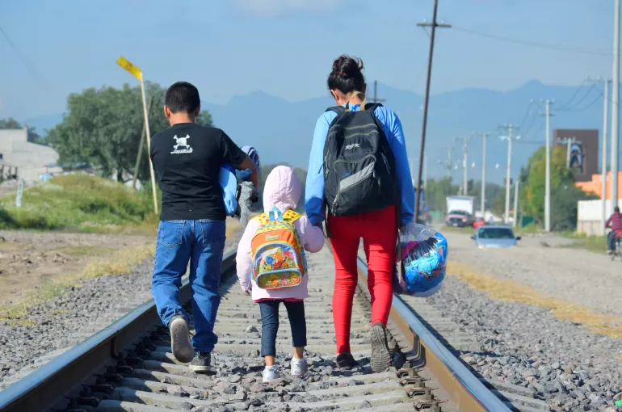
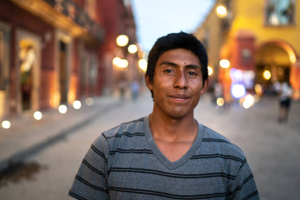

Comunidad Conectada
 (+55) 2299 6212 Soporte
(+55) 2299 6212 Soporte
(+55) 2299 6212 Soporte
(+55) 2299 6212 Soporte
Uniendo esfuerzos para mejorar la calidad de vida de nuestras comunidades vulnerables.
Comunidad Conectada busca ayudar a la comunidad uniendo esfuerzos entre personas, pequeños productores, organizaciones locales y servicios de salud para mejorar la calidad de vida de quienes más lo necesitan.
Contribuimos a los ODS de Fin de la Pobreza, Hambre Cero, y Salud y Bienestar mediante el acceso a recursos esenciales y la promoción de la colaboración comunitaria.
"Gracias a Comunidad Conectada, ahora tenemos acceso a alimentos frescos y apoyo médico que antes era imposible." - Familia Pérez
"El voluntariado me ha dado la oportunidad de conocer a gente maravillosa y ayudar a quienes más lo necesitan." - Juan López, voluntario